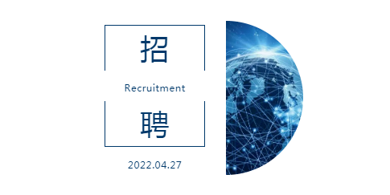
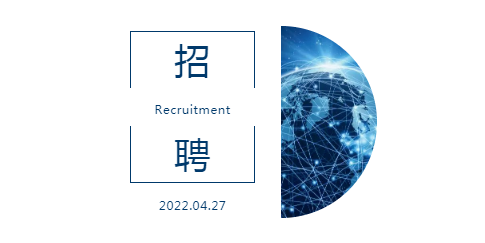
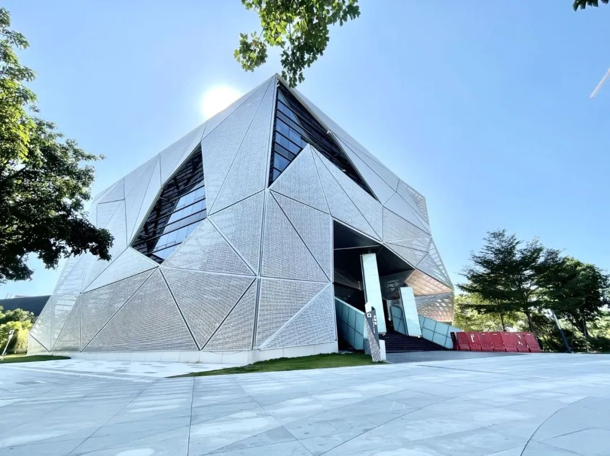

收录于合集
以下文章来源于大湾区评论 ，作者GBA Reviews
大湾区评论 .
事实、洞见、影响。
 

研究院简介
香港中文大学（深圳）前海国际事务研究院 是一所由郑永年教授领衔的兼容学术性思想库和政策研究型智库的社会科学综合性科研机构。研究院以“研究世界、探索前路、体认天理、经世治平”为理念，坚持原创的、独立的、世界领先的学术研究，共同探索民族性、国家性、世界性的重大问题。
研究院致力于培养具有国家情怀和国际视野的优秀人才，为区域及国家的战略发展提供及时的、富有预见性的政策分析。同时，打造政策、理论、人才培养相结合的知识与政策领域的国际交流平台，提升国家在国际和外交问题上的话语权和国际影响力。
为了进一步壮大团队，我们希望选拔招募有坚定学术信仰、政策研究能力和深厚职业素养的人员，携手打造深耕中国与世界发展的高端学术交流平台，成为中国智库的中坚力量。诚邀志同道合者加盟！
香港中文大学（深圳）校园
01
院长介绍
郑永年教授
香港中文大学（深圳）教授、前海国际事务研究院院长。曾先后获中国北京大学法学学士、硕士，美国普林斯顿大学政治学硕士、博士。历任中国北京大学政治与行政管理系讲师；英国诺丁汉大学中国政策研究所教授和研究主任；新加坡国立大学东亚研究所资深研究员、所长；美国社会科学研究会和美国麦克阿瑟基金会研究基金研究员。主要从事国际关系、外交政策、中美关系、中国内部转型及其外部关系研究。近年来先后出版和主编著作近百部，其中英文专著10部。
01
招聘岗位
资深研究员/研究员/副研究员/助理研究员/访问学者
**
**
1.1岗位职责
**
**
1.从事公共政策、全球事务、国际关系、全球政治、经济或相关领域的学术和政策研究，并承担相关科研项目管理任务；
2. 参与研究院开展的相关活动，包括论坛、圆桌讨论会和公开讲座等；
3. 参与研究院与全球其它研究机构的交流合作；
4. 完成研究院的其它任务。
1.2任职条件
**
**
1. 拥有政治学、经济学、社会学或相关领域的博士学位，从事公共政策、国际关系、国际政治经济、大数据等方向的研究工作，也包括对这些领域深感兴趣的理工科类研究者；
2. 能够熟练使用中英双语作为工作语言，撰写研究论文和政策分析报告；
3. 扎实的科研背景和高质量的论文发表记录；
4. 具有国际咨询、金融、科技、智库行业工作经验的优先；具有数据分析软件使用和编程能力的研究者优先；
5. 遵守学术道德，能够与不同领域的同事进行交流与合作。

前海办公楼
1.3薪酬待遇
**
**
1. 研究院依照香港中文大学（深圳）相关规章制度，根据申请人的资历和经验提供有竞争力的薪资，并根据中国的现行劳动法提供法定福利。对于高端领军人才或研究能力特别突出的拔尖人才，薪酬待遇可面议；
2. 符合条件的入职人员可享受我院提供的前海人才房补贴、项目奖金、带薪年假、六险一金、定期体检、免费班车，以及协助子女义务教育阶段申请入学香港中文大学（深圳）附属学校/幼儿园等福利。
1.4工作地点
**
**
香港中文大学（深圳）校园或前海办公楼。
1.5申请流程
**
**
申请者可将最新简历、学位证书、近年代表性论文等发送至 gccs_hr@cuhk.edu.cn 。初轮审核通过后，申请人需提供三封推荐信。
简历应包含以下信息:
1. 研究领域和研究兴趣；
2. 个人信息，包括教育背景、工作经历、获奖情况等相关信息；
3. 已发表论文，需注明作者、相关期刊影响因子及引文。
香港中文大学（深圳）校园
02
招聘岗位
研究助理
**
**
1.1岗位职责
**
**
1. 在研究院主编指导下对政策文件进行编辑、校对、排版；负责官方媒体的日常运营，包括但不限于内容更新、留言回复等；
2. 服务研究团队，协调研究人员与院内外合作伙伴的关系，包括但不限于对接大学科研管理机构/政府/企业、组织申报科研课题或人才项目等；
3. 在研究员的指导下进行学术研究，包括但不限于通过数据分析等方式参与研究、撰写政策报告等；
4. 协助院内行政事务，包括但不限于政策报告借阅、图书馆管理等；
5. 研究院领导交办的其他事务。
1.2任职条件
**
**
1. 具备政治学、经济学和社会学硕士及以上学历；公共政策、公共管理、全球事务、国际关系、国际政治经济学或相关学科背景者优先考虑；
2. 英语可以作为工作语言，能够撰写英文学术研究论文；
3. 具备出色的沟通能力、多任务处理能力和独立有效完成工作的能力，有责任感，积极承担各项职责。
1.3薪酬待遇
1.研究院依照香港中文大学（深圳）相关规章制度，根据申请人的资历和经验提供有竞争力的薪资；由香港中文大学（深圳）直接聘用；
2. 符合条件的入职人员可享受提供前海人才房补贴、带薪年假、节日补贴、六险一金、定期体检、免费班车等福利，协助子女义务教育阶段申请入学香港中文大学（深圳）附属学校/幼儿园。
1.4工作地点
**
**
香港中文大学（深圳）校园或前海办公楼。
1.5申请流程
**
**
请准备好完整的中、英文简历和个人作品，附上三位推荐人的姓名，发送至邮箱： gccs_hr@cuhk.edu.cn , 邮件标题注明：应聘职位+本人姓名。面试通过后，申请人需提供两封推荐信。
排版 | 王佳怡
文章来源于“大湾区评论公众号”，文章观点不代表本平台观点